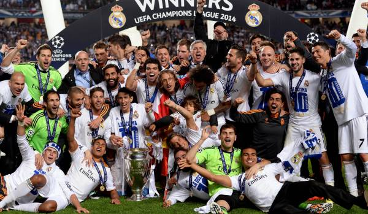
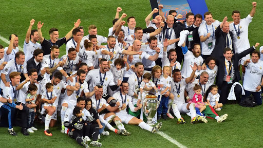
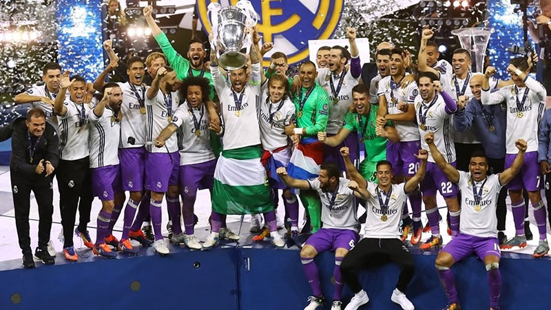
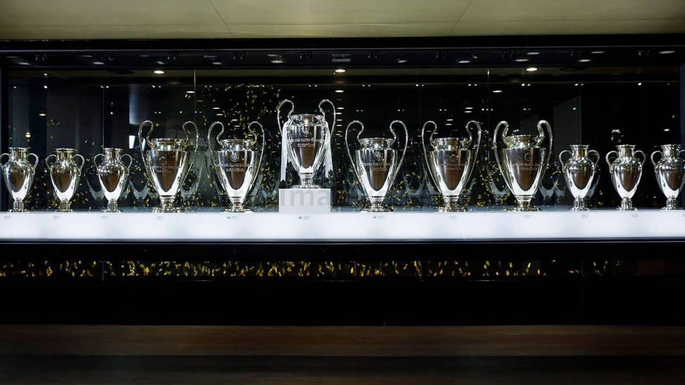
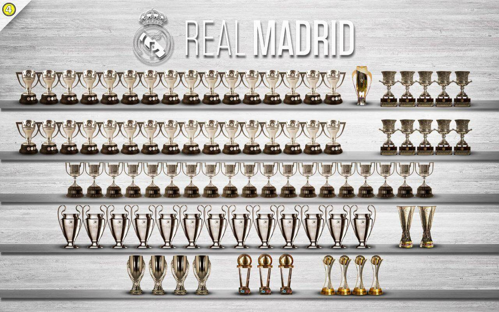
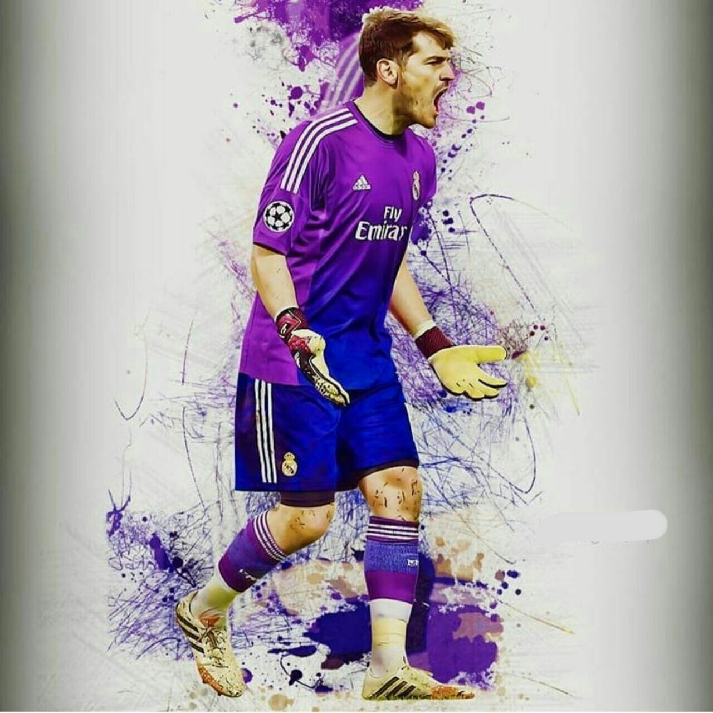

.jpg)
کلمهٔ رئال در زبان اسپانیایی، به معنی «سلطنتی» است، این لقب را شاه آلفونسو سیزدهم در سال 1920 بر این تیم نهاد. همچنین در همان سال، شکل یک تاج نیز بر روی آرم این باشگاه قرار گرفت. Real Madrid Club de Fútbol عبارتی است به زبان اسپانیایی که به معنای باشگاه فوتبال مادرید پادشاهی می باشد. رئالی ها در طی تاریخ خود، حتی یک بار هم از لیگ اول اسپانیا (لا لیگا) خارج نشدند و همیشه در این لیگ حضور داشتند. آن ها از دهه 50 بود که خود را به عنوان یکی از قدرت های فوتبال اسپانیا و اروپا به همگان معرفی کردند. در دههٔ 80 یکی از بهترین دوران های خود را داشتند و یکی از بهترین تیم ها معروف به «تیم کرکس ها» بودند که موفق به کسب دو جام یوفا، 5 قهرمانی متوالی اسپانیا، 1 قهرمانی جام اسپانیا و 3 قهرمانی سوپرکاپ اسپانیا شدند.رئال مادرید سال هاست که در لالیگا، از تیم های قدرتمند محسوب می شود و رقیب اصلی این تیم نیز، بارسلونا است.
گروهی از دانشجویان و دانشگاهیان، فوتبال را به شهر مادرید آوردند. تعدادی از این افراد در همان سالی که باشگاهی را با نام باشگاه فوتبال آسمان به وجود آوردند و صبح های دوشنبه به فوتبال می پرداختند. 3 سال بعد و در سال 1900، این باشگاه به دو باشگاه مجزا تبدیل شد. سپس دو سال بعد و در 6 مارس سال 1902، مجدداً باشگاه نام خود را به باشگاه فوتبال رئال مادرید تغییر داد 3 سال بعد، این تیم موفق شد اولین جام خود را با شکست تیم اتلتیک بیلبائو در جام اسپانیا به دست بیاورد.در 4 ژانویه 1909 بود که «آدولفو ملندز»، مدیر وقت رئال در آن زمان، اساسنامه جام اسپانیا را امضا و تأیید کرد تا باشگاه به یکی از اعضای فدراسیون سلطنتی فوتبال اسپانیا تبدیل شود. در سال 1920 باشگاه نام خود را بازهم تغییر داد و این بار به «رئال مادرید» که اینکار پس از اهدای عنوان رئال توسط شاه آلفونسو سیزدهم اتفاق افتاد. در سال 1929، اولین لیگ فوتبال اسپانیا راه اندازی شد. رئالی ها تا هفته پایانی در صدر جدول حضور داشتند تا اینکه باخت هفته پایانیشان به اتلتیک بیلبائو، باعث قهرمانی بارسلونا در لالیگا و نایب قهرمانی آنها شد. رئالی ها اولین لیگ خود را در فصل 31-1932 کسب کردند و سال بعد نیز این عنوان را کسب کردند تا اولین تیمی باشند که این جام را دو سال پیاپی کسب می کنند.
طراحی ابتدایی آرم باشگاه، بسیار ساده بود. این آرم متشکل از سه حرف MCF بود که 3 حرف ابتدای نام باشگاه (Madrid Club de Fútbol) بود که در زمینه ای آبی طراحی شده بود و بر روی لباس سفید تیم قرار داشت. در سال 1908 بود که اولین تغییر در آرم باشگاه رخ داد و برای زیباتر شدن آرم، نوشته ها درون یک دایره قرار گرفتند. تغییرات بعدی، تغییرات جزئی بودند تا اینکه در سال 1921، شاه آلفونسو سیزدهم، به عنوان هدیه، عنوان رئال (رویال که تقریباً معنی سلطنتی می دهد) را به تیم اهدا کرد و بدین منظور در آرم باشگاه تغییراتی ایجاد شد و شکل یک تاج بر روی آرم باشگاه قرار گرفت. اما در سال 1931 که آلفونسو از حکومت کنار رفت، هم کلمه رئال از نام باشگاه حذف شد و هم شکل تاج از روی آرم باشگاه برداشته شد و به جای آن، خطی تیره بر روی آرم باشگاه قرار گرفت. در سال 1941 و دو سال بعد از جنگ های داخلی، مجدداً کلمه رئال به نام باشگاه اضافه شد و تاج پادشاهی نیز به بالای آرم باشگاه افزوده شد. این آرم تا سال 1997 تغییری نکرد تا اینکه در این سال تغییر جزئی داشت و برای آخرین بار در سال 2001بود که باشگاه برای مدرن کردن آرم و بروزرسانی آن، آرم را تغییر داد که البته تغییراتی جزئی بودند از جمله خطی که از وسط آن می گذشت، به رنگ آبی متمایل شد.
لوگو کنونی باشگاه محبوب رئال مادرید
از همان ابتدا، لباس خانگی رئالی ها، یکدست سفید بود هرچند که یک خط تیره از وسط آن می گذشت (این خط بعدها از لباس حذف شد اما در آرم باشگاه باقی ماند). البته در آن زمان جوراب های بازیکنان، رنگ آبی داشت در حالی که اکنون به رنگ سفید است. در سال 1902 بود که لباس های راه راه، یکدست سفید شدند و جوراب های آبی رنگ، سیاه شدند. در سال 1947 بود که مدیر باشگاه، تصمیم گرفت تا به پیراهن های بازیکنان، دکمه اضافه کند و آرم باشگاه را، روی سینه سمت چپ بازیکنان اضافه کرد (چیزی که تاکنون نیز تغییر نکرده است). همچنین در نوامبر1947 در بازی برابر اتلتیکو مادرید، رئالی ها به نخستین تیم اسپانیایی تبدیل شدند که لباسشان دارای شماره شد.
لباس خارج از خانه رئالی ها نیز از همان ابتدا یا سیاه کامل بوده است یا کاملاً ارغوانی و هیچ گاه تغییر نکرده است. لباس تیم اکنون توسط آدیداس تولید می شود که این اتفاق از سال 1998 شروع شد.اولین حامی مالی تیم، شرکت «زانوسی» بود که از سال 1982 تا 1985 حامی مالی تیم بود. سپس حامیان مالی ای چون «پارمالات» با تیم بودند تا اینکه تیم با شرکت «تکا» قراردادی بلند مدت را از سال 1992 بست. این قرارداد تا سال 2001 ادامه داشت تا این که رئالی ها به این قرارداد پایان دادند. آن ها ابتدا آدرس سایت اینترنتی خود را به مدت یک سال بر روی لباس خود نوشته بودند تا تبلیغ سایت خود را بکنند. بعد از آن در سال 2002، باشگاه با شرکت زیمنسقرار داد بست. سپس در سال 2008، کمپانی آسیایی «بن کیو» حامی مالی تیم شد و آرم این کمپانی بر روی لباس تیم قرار گرفت. اسپانسر بعدی تیم نیز Bwin است که به خاطر مشکلات مالی بن کیو، باشگاه مجبور به تغییر حامی مالی شد و سپس نوبت شرکت هواپیمایی امارات شد که تاکنون حامی مالی باشگاه است.
سدوره کرکس ها و کسب هفتمین و هشتمین جام اروپایی 1980–2000 رئالی ها در اوایل دهه هشتاد، وضعیت چندان مناسبی نداشتند و نتوانستند لالیگا را فتح کنند تا اینکه گروهی از بازیکنان لیگ اسپانیا به تیم آمدند و با خود موفقیت را به همراه داشتند. یک روزنامه نگار اسپانیایی عنوان کرکس ها را برای آن تیم انتخاب کرد که به خاطر 5 بازیکن فوق العاده آن بود که شامل امیلیو بوتراگوئنو، مانوئل سانچز، مارتین وازکوئز، میشل و میخل پاردخا می شد. کرکس ها (که بعداً با رفتن پاردخا به رئال ساراگوسا، به گروهی 4 نفره تبدیل شد)، در کنار بازیکنانی چون فرانسیسکو بویو که دروازه بان تیم بود و یا مهاجم خود، هوگو سانچز، یکی از بهترین تیم های نیمه دوم دهه 80 در اسپانیا و اروپا بودند و موفق شدند 2 جام یوفا، 5 لیگ اسپانیا پیاپی، یک جام حذفی اسپانیا و 3 سوپر کاپ اسپانیا را کسب کنند. اما این تیم رویایی و گروه کرکس ها، در اوایل دهه 90 و با جدایی امیلی بوتراگونو، مارتین وازکوئز و میشل از تیم، از هم پاشید.
رئال مادرید معروف به کرکس ها دوره کهکشانی ها، عصر کالدرون و دو مدیریت پرز (2000 تاکنون) در جولای سال 2000، فلورنتینو پرز به عنوان مدیر باشگاه انتخاب شد. وی در وعده های انتخاباتیش، قول برطرف کردن بدهی های سنگین باشگاه، افزایش امکانات و مدرن کردن باشگاه را داده بود هرچند که وعده اصلی وی، امضای قرارداد با لوئیز فیگو، ستاره آن زمان بارسلونا بود. در همان سال بود که پرز با صرف هزینه های سنگین، تیمی را تشکیل داد که به خاطر داشتن ستارگان بزرگ، در سرتاسر جهان به نام «کهکشانی ها» معروف شد. بازیکنان بزرگی چون زیدان، رونالدو، فیگو، کارلوس، رائول و دیوید بکهام از جمله ستارگان آن روزهای رئال مادرید بودند که ویسنته دل بوسکه را به عنوان سرمربی خود می دید. اما با وجود این هزینه ها و کسب نهمین جام اروپایی و کسب قهرمانی لالیگا، پرز تصمیم گرفت تا دلبوسکه را برکنار کند، که همینکار وی باعث شد تا سفیدها در طی 3 سال آینده، موفق به کسب هیچ جامی نشوند تا پرز از کار برکنار شود. در ادامه و در سال 2006 بود که رامون کالدرون به عنوان مدیر جدید باشگاه انتخاب شد. کالدرون بلافاصله کاپلو را مجدداً به عنوان مربی تیمش انتخاب کرد تا طلسم قهرمان نشدن تیم را بشکند.
گرونترین تیم تاریخ(کهکشانی های مادریدی) آنها برای اولین بار در طی 4 سال گذشته، موفق به کسب جام شدند و لالیگا را با کاپلو فتح کردند. اما با این وجود، کاپلو بازهم یک فصل تنها در تیم دوام آورد و مجدداً اخراج شد. رئالی ها موفق شدند فصل بعد نیز 31مین قهرمانی خود را در لالیگا کسب کنند که این برای اولین بار در طی 18 سال گذشته بود که دو سال پیاپی این جام را کسب کردند. در ژوئن 2009 و پس از 2 سال ناکامی تیم و برکناری کالدرون، پرز مجدداً به عنوان مدیر باشگاه انتخاب شد. پرز مجدداً سیستم کهکشانی های خود را پیش گرفت. وی ابتدا کاکا را از تیم میلان خرید و پس از آن کریستیانو رونالدو را از منچستر یونایتد با رقم 96 میلیون یورو خریداری کرد که یک رکورد تاریخیست. رئالی ها با وجود خریدن بازیکنانی چون رونادو، کاکا و ژابی آلونسو، نتوانستند زیر نظر مانوئل پلگرینی، جامی را کسب کنند و پرز وی را برکنار کرد. پس از آن، بعد از چندین روز مذاکره با ماسیمو موراتی، مدیر اینتر میلان ایتالیا، پرز توانست وی را راضی کند که اجازه خروج مربی خود، خوزه مورینیو را که برای آنها 3 جام کسب کرده بود را بدهد تا مورینیو به عنوان مربی جدید تیم انتخاب و شروع بکار کند. آنها اولین جام خود با مورینیو را در سال 2010، با برد یک بر صفر خود برابر بارسلونا و در فینال جام حذفی بدست آوردند. همچنین در سال بعد 2011 لالیگا را با غلبه بر بارسلونا و سلطه شکنی این تیم از آن خود کردند.
رئال مادرید فصل 13_2012 رئال مادرید؛ فتح دسیما با کارلتو 12 سال انتظار رئال مادرید برای تجربه دوباره لذت قهرمانی در مهمترین تورنمنت باشگاهی قاره اروپا به پایان رسید. کهکشانی ها توانستند اتلتیکومادرید را در فینال لیگ قهرمانان اروپا فصل 2013/14 با نتیجه 4 بر یک شکست دهند تا طلسم طولانی مدت قوهای سفید پایتخت اسپانیا برای رسیدن به دسیما (دهمین قهرمانی در لیگ قهرمانان اروپا) شکسته شود. رئال مادرید با هدایت کارلو آنچلوتی تعداد قهرمانی هایش را در لیگ قهرمانان اروپا دو رقمی و رکورد خود را دست نیافتنی تر از قبل کرد.
رئال مادرید فصل 15_2014 رئال مادرید ؛ دوره طلایی با زیدان رئال مادرید، طی پنج سال گذشته، چهار بار توانسته تا قهرمان اروپا شود و یکی از طلایی ترین دوران تاریخ آن ها رقم خورد. دورانی که برای هر تیمی می تواند یک رویا باشد، رویای رئال مادرید بودن. کهکشانی ها پس از فتح دو فینال میلان و کاردیف برابر تیم های اتلتیکو مادرید و یوونتوس تحت هدایت زین الدین زیدان، در فصلی که گذشت به نظر بی انگیزه می رسیدند. رئال مادرید فصل را در لالیگا خیلی بد شروع کرد و از همان ابتدا، فاصله زیادی با بارسلونا در صدر جدول ایجاد شد، به طوری که با شکست خانگی 3-0 در ال کلاسیکوی رفت، امیدهای رئال مادرید برای قهرمانی در لالیگا و دفاع از عنوان قهرمانی، رنگ باخت. حالا تنها عنوانی که می توانست فصل رئال مادرید را نجات دهد، قهرمانی در اروپا بود. ماموریتی که غیر ممکن به نظر می رسید زیرا رئال مادرید در مرحله گروهی لیگ قهرمانان نیز ضعیف کار کرده بود و در نیم فصل اول، انتقادات زیادی متوجه کریستیانو رونالدو و زین الدین زیدان شد. رئال مادرید در گروه مرگ مسابقات توانست پایین تر از تاتنهام و بالاتر از دورتموند و آپوئل قبرس، به عنوان تیم دوم به مرحله بعد صعود کند تا با دشوارترین قرعه ممکن یعنی پاری سن ژرمن مواجه شود. اما زیدان، همانند همیشه با مدیریت عالی و شخصیت بزرگ خود توانست بر بحران ها غلبه کند. در نیم فصل دوم، رئال مادرید متفاوتی را از زیدان دیدیم. با قطع امید از لالیگا و سپس حذف از کوپا دل ری، حالا تنها لیگ قهرمانان جبهه باقی مانده برای رئال مادرید بود و قوهای سپید به رهبری زیدان، تمام تمرکز خود را معطوف این رقابت ها کردند. با خنثی کردن فوق ستارگانی همانند نیمار و کیلیان ام باپه در سانتیاگو برنابئو، رئال مادرید با شکست 3-1 پاری سن ژرمن گام بزرگی برای صعود به مرحله بعد برداشت. پاری سن ژرمن که امید زیادی داشت تا در خانه نتیجه را جبران کند، با مصدومیت شدید نیمار، از نظر روانی نیز قافیه را باخت تا در پارک دو پرنس نیز پاری سن ژرمن برابر رئال مادرید مغلوب شود. کهکشانی ها با پیروزی 5-2 در مجموع برابر تیمی که به زعم خیلی ها، مدعی قهرمانی در اروپا به حساب می امد، اقتدار خود در اروپا را به اثبات رساند و برای رقبا، خط و نشان کشید.
یازدهمین قهرمانی در لیگ قهرمانان اروپا در مرحله یک چهارم نهایی، نام یوونتوس به عنوان حریف رئال مادرید از گوی بیرون آمد، حریفی که رئال مادرید همیشه در بازی های رفت و برگشت برابر آن به مشکل خورده و غیر از فینال کاردیف، یوونتوس همواره رقابتی پایاپای با رئال مادرید در طول تاریخ داشته است. آمار حکم به موفقیت یوونتوس برابر رئال مادرید می داد اما رئال مادرید، همیشه رئال مادرید است. آن ها در تورین، نمایشی بسیار خوب ارائه دادند و با درخشش فوق العاده کریستیانو رونالدو، توانستند یوونتوس را در تورین 3-0 شکست دهند. یوونتوس که شبی پر اشتباه را گذرانده بود، تاکنون شکستی به این سنگینی در خانه اش متحمل نشده بود. در دور برگشت اما همه چیز فرق دارد. رم توانسته بود بارسلونای بزرگ را حذف کند و کامبک بزند، پس رئال مادرید نباید خود را از پیش صعود کرده می دانست. اگرچه سناریویی مشابه بارسلونا برای رئال مادرید در حال تکرار شدن بود. در حالی که یوونتوس با ارائه یک بازی بسیار خوب، تا دقیقه 92 از حریف 3-0 پیش بود و بازی در حال رفتن به وقت های اضافه بود، با صحنه جنجالی خطای بن عطیه روی لوکاس وازکز به سود شاگردان زیدان اعلام پنالتی شد. جانلوییجی بوفون نیز به خاطر اعتراض به این صحنه، به طرزی جنجالی اخراج شد و کریستیانو رونالدو در دقیقه 97 دروازه شزنی را باز کرد تا رئال مادرید به سختی و با نتیجه 4-3 به نیمه نهایی برسد. در نیمه نهایی، رئال مادرید بایستی با بایرن مونیخ، رقیب سنتی اش در اروپا روبرو می شد. بایرن مونیخ با یوپ هاینکس آماده بود تا انتقام حذف سال گذشته بایرن مونیخ و اتفاقاتی که در آن دو دیدار افتاده بود را بگیرد اما حریف، رئال مادرید بود. تیمی که هیچ چیزی برای از دست دادن نداشت و ضمن این که حذف آن ها در مراحل بالایی لیگ قهرمانان، امری فوق العاده سخت است. در آلیانتس آرنا، رئال مادرید علی رغم عقب افتادن از بایرن مونیخ، توانست با گل های مارسلو و آسنسیو 2-1 باواریایی ها را در آلمان شکست دهد. در سانتیاگو برنابئو، رئال مادرید باید برای پیروزی به میدان می رفت چون آن ها از اتفاقات بازی با یوونتوس درس گرفته بودند. کیمیش فورا در برنابئو دروازه رئال مادرید را باز کرد تا هواداران رئال مادرید بابت تکرار اتفاقات بازی برگشت با یوونتوس نگران شوند اما بنزما سریعا گلزنی کرد تا خیالشان کمی راحت شود. با شروع نیمه دوم بازی، با اشتباه احمقانه اولرایش، دروازه بان بایرن مونیخ، کریم بنزما با فرصت طلبی گلزنی کرد تا گل هامس رودریگز کلمبیایی به تیم سابقش در ادامه بازی بی اثر شود. رئال مادرید برابر بایرن مونیخ نیز رنج های زیادی متحمل شد تا به مرحله بعدی یعنی فینال برسد. در فینال، رئال مادرید باید به مصاف لیورپولی می رفت که با حذف پورتو، منچسترسیتی و رم به فینال رسیده بود. لیورپول برای قهرمانی امیدها و انگیزه های زیادی داشت. آن ها می خواستند با درخشش محمد صلاح، ستاره محبوب خود که عملکردی عالی داشت، به سال های بی جامی خود پایان دهد. پس از دو قهرمانی پیاپی رئال مادرید در لیگ قهرمانان، جهان ترجیح می داد تا لیورپول قهرمان شود و غیر از طرفداران رئال مادرید، کم تر کسی دوست داشت تا رئال مادرید دوباره قهرمان اروپا شود. اما داستان همیشگی، بازهم تکرار شد. لیورپول بازی را خوب شروع کرد و حملاتی ترتیب داد اما نقطه عطف بازی در اواسط نیمه اول رقم خورد، جایی که سرخیو راموس با حرکت خشن خود روی محمد صلاح، بهترین بازیکن لیورپول باعث مصدومیت او شد. رئال مادرید، در این بازی گل های عجیبی به ثمر رساند. گل اول این بازی با اشتباه حرکت آماتور گونه لوریس کاریوس برای رئال مادرید به ثمر رسید. او توپ را تقدیم بنزما کرد و مهاجم فرانسوی راحت ترین کار ممکن را انجام داد. مانه بازی را به تساوی کشاند اما گرت بیل دقایقی پس از تعویض با ضربه ای قیچی گلی استثنایی به ثمر رساند. گل بعدی نیز با اشتباه مرگبار کاریوس برای رئال مادرید به دست آمد. شوت از راه دور بیل با ناتوانی کاریوس در مهار آن وارد دروازه شد تا رئال مادرید با پیروزی 3-1 برابر لیورپول، برای سومین بار متوالی قهرمان اروپا شده و سیزدهمین قهرمانی خود در رقابت های لیگ قهرمانان را به ثبت برساند.
سیزدهمین قهرمانی رئال در اروپا(هتریک) موسیقی باشگاه رئال مادرید سرود مخصوص به خوذش را دارد این سرود برگرفته از تاریخ و افتخارات این باشگاه است اکنون این سرود برای دانلود در اختیار شما قرار گرفته است ورزشگاه ورزشگاه سانتیاگو برنابئو (به اسپانیایی: Estadio Santiago Bernabéu) یک ورزشگاه فوتبال، واقع در مادرید اسپانیاست که در تاریخ ۱۴ دسامبر ۱۹۴۷ به مالکیت باشگاه فوتبال رئال مادرید افتتاح شد. این ورزشگاه در حال حاضر ۸۱۰۴۴ نفر گنجایش دارد.[۴] این ورزشگاه که به احترام رئیس سابق باشگاه سانتیاگو برنابئو یسته نامگذاری شده در حال حاضر یکی از مشهورترین و معتبرترین ورزشگاههای جهان فوتبال معرفی میشود. این ورزشگاه میزبان چهار دوره لیگ قهرمانان اروپا در سال ۱۹۵۷، ۱۹۶۹، ۱۹۸۰ و ۲۰۱۰ بودهاست.[۵] همچنین فینال جام ملتهای اروپا ۱۹۶۴ و جام جهانی فوتبال ۱۹۸۲ در این ورزشگاه برگزار شدهاست.[۶] علاوه بر آن، فینال جام لیبرتادورس ۲۰۱۸ نیز در این ورزشگاه برگزار شد زمانی که فلورنتینو پرز به مقام ریاست باشگاه درآمد وی یک نقشه جامع با یک هدف را دنبال کرد: راحتتر کردن ورزشگاه و افزایش کیفیت تسهیلات و در نتیجه به حداکثر رساندن درآمد ورزشگاه. وی ۱۲۷ میلیون یورو بین سالهای ۲۰۰۱ تا ۲۰۰۶ هزینه کرد که شامل توسعه قسمت شرقی ورزشگاه با اضافه نمودن یک نمای سردر در خیابان فادر دامین و جایگاههای اختصاصی جدید، یک سکوی جدید در قسمت شرقی، یک جایگاه جدید برای خبرنگاران، یک سیستم صوتی جدید، یک مشروب فروشی جدید، یکپارچهسازی سیستمهای گرمایشی جایگاه تماشاچیان، آسانسور مدرن با منظرهای زیبا به ورزشگاه، رستورانهای جدید، پله برقی و ایجاد ساختمانی چند منظوره در خیابان فادر دامین میشد. برپایه توسعه قسمت شرقی جانبی و ایجاد گالریهای جدید گنجایش ورزشگاه سانتیاگو برنابئو به ۸۰۳۵۴ نفر رسید. در سال ۲۰۰۷ میلادی هزارمین بازی در سانتیاگو برنابئو انجام شد. به علاوه طبق آخرین بازبینی یوفا در تاریخ ۲۷ اکتبر ۲۰۰۷ با توسل به بازی لیگ قهرمانان اروپا در برابر المپیاکوس یونان، آخرین قدمها برای انتخاب سانتیاگو برنابئو به عنوان ورزشگاه ممتاز در تاریخ ۱۴ نوامبر ۲۰۰۷، یک ماه قبل از شصتمین سالگرد تأسیس ورزشگاه برداشته شد. یوفا در همین رابطه اعلام کرد که ورزشگاه بهطور رسمی نامش را به ورزشگاه ممتاز تغییر خواهد داد.[۸] پرز قبل از استعفا در سال ۲۰۰۵ پیشنهاد داد یک سقف قابل جمع شدن ساخته شود. در سال ۲۰۰۹ همزمان با انتخاب مجدد پرز به عنوان رئیس باشگاه اعلام شد که ساخت این سقف بر اساس وضعیت مالی باشگاه غیرممکن است. با این حال طبق اعلام مارکای اسپانیا، پرز قصد به دوبارهسازی سانتیاگو برنابئو دارد. طبق اخبار این روزنامه معماران این پروژه از بین لیستی از معماران اسپانیایی، سانتیاگو کالاتراوا و رافائل مونئو برنده جایزه پریتزکر و یو مینگ پی که هویت آمریکایی-چینی دارد که وی هم برنده جایزه پریتزکر شده انتخاب خواهند شد. ورزشگاه بهطور رسمی میزبانی فینال لیگ قهرمانان باشگاههای اروپا در سال ۲۰۱۰ را در مراسمی در نیون در سال ۲۰۰۸ میلادی اعلام کرد. با وجود حذف رئال مادرید در مرحله حذفی یکهشتم نهایی لیگ قهرمانان اروپا در فصل ۲۰۰۹–۲۰۱۰ بارسلونا به مرحله نیمه نهایی لیگ قهرمانان رسید و هواداران این تیم اسپانیایی آرزو داشتند جام این رقابتها را در ورزشگاه رقیب دیرینهشان بالای سر ببرند و این در حالی بود که مادرید به شدت توسط روزنامههای اسپانیایی مورد تحقیر و انتقاد به خاطر رئیس سابق رامون کالدرون قرار گرفته بود.
عناوین و جام ها افتخارات اروپایی سیزده دوره قهرمانی لیگ قهرمانان(1956_1957_1958_1959_1960_1966_1998_2000_2002_2014_2016_2017_2018) دو دوره قهرمانی لیگ اروپا(1985_1986) چهار دوره قهرمانی سوپر جام اروپا (2002_2014_2016_2017) سه دوره جام بین قاره ای(2960_1998_2002) چهار دوره جام باشگاه های جهان(2014_2016_2017_2018) افتخارات داخلی سی و چهار دوره قهرمانی لیگ(۱۹۳۱–۳۲، ۱۹۳۲–۳۳، ۱۹۵۳–۵۴، ۱۹۵۴–۵۵، ۱۹۵۶–۵۷، ۱۹۵۷–۵۸، ۱۹۶۰–۶۱، ۱۹۶۱–۶۲، ۱۹۶۲–۶۳، ۱۹۶۳–۶۴، ۱۹۶۴–۶۵، ۱۹۶۶–۶۷، ۱۹۶۷–۶۸، ۱۹۶۸–۶۹، ۱۹۷۱–۷۲، ۱۹۷۴–۷۵، ۱۹۷۵–۷۶، ۱۹۷۷–۷۸، ۱۹۷۸–۷۹، ۱۹۷۹–۸۰، ۱۹۸۵–۸۶، ۱۹۸۶–۸۷، ۱۹۸۷–۸۸، ۱۹۸۸–۸۹، ۱۹۸۹–۹۰، ۱۹۹۴–۹۵، ۱۹۹۶–۹۷، ۲۰۰۰–۰۱، ۲۰۰۲–۰۳، ۲۰۰۶–۰۷، ۲۰۰۷–۰۸، ۲۰۱۱–۱۲، ۲۰۱۶–۱۷، ۲۰۱۹-۲۰۲۰) نوزده دوره قهرمانی جام حذفی اسپانیا(۱۹۰۵، ۱۹۰۶، ۱۹۰۷، ۱۹۰۸، ۱۹۱۷، ۱۹۳۴، ۱۹۳۶، ۱۹۴۶، ۱۹۴۷، ۱۹۶۲، ۱۹۷۰، ۱۹۷۴، ۱۹۷۵، ۱۹۷۹–۸۰، ۱۹۸۱–۸۲، ۱۹۸۸–۸۹، ۱۹۹۲–۹۳، ۲۰۱۰–۱۱، ۲۰۱۳–۱۴) یازده دوره قهرمانی سوپرجام اسپانیا(۱۹۸۸، ۱۹۸۹*، ۱۹۹۰، ۱۹۹۳، ۱۹۹۷، ۲۰۰۱، ۲۰۰۳، ۲۰۰۸، ۲۰۱۲، ۲۰۱۷ ، ۲۰۱۹ ۱۹۸۲، ۱۹۹۵، ۲۰۰۷ ،۲۰۱۴)
 اسطوره ها و بازیکنان با بیشترین بازی برای رئال مادرید باشگاه رئال مادرید پر از ستاره های بزرگه مثل بازیکنانی نظیر،زیدان،بکام،کریستیانو،کاسیاس و... اما نگاهی میندازیم به پنج بازیکن برتری که بیشترین تعداد بازی را برای این باشگاه انجام دادند رائول:741 بازی کاسیاس:725 بازی سانچس:710 بازی راموس:671 بازی سانتیانا:645 بازی
.png)
برترین گلزنان کریستیانو رونالدو 438 بازی:450 گل رائول گنزالس 741 بازی:323 گل دی استفانو 396 بازی:308 گل سانتیانا 645 بازی:290 گل پوشکاش 262 بازی:242 گل هوگو سانچز 282 بازی:208 گل کنار برترین گلزنان این باشگاه بهتره ایکر کاسیاس دروازه بان افسانه ای رئال مادرید را فراموش نکنیم ک جزو سه دروازبان برتر تاریخ هم هست این دروازبان با 329 کلینشیت رکورد داره کلینشیت در دنیاست
با تشکر از از حمایتتون از انجمن MESH خوشحال میشویم نظرات و پیشنهاد های خود را با پیج های زیر اشتراک
{ehsan_ghorbani.1}